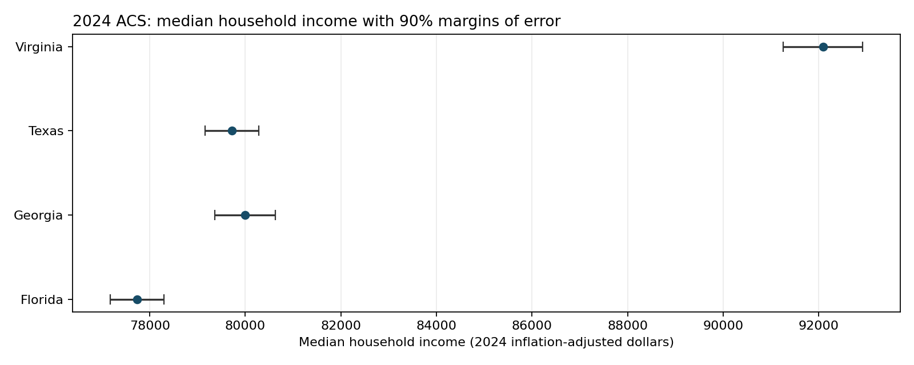

Use the consolidated Census Statistical Quality Standards, revised September 29, 2026, within their stated scope. Separate formal requirements from the practical design recommendations and implementation choices described here. Coordinate this guidance with Titles and Subtitles, Legends, and Sources.
Uncertainty communicates how precisely a reported value is known. Census estimates may be affected by sampling error, nonsampling error, or modeling assumptions. When uncertainty could change how readers interpret a difference, ranking, or trend, explain it alongside the estimate.
| Measure | Meaning | Interpretation caution |
|---|---|---|
| Standard error (SE) | Estimated sampling variability of a statistic across repeated samples | Not a direct measure of all possible errors |
| Margin of error (MOE) | Published interval half-width at a specified confidence level | Always identify the confidence level |
| Confidence interval (CI) | Interval constructed by a stated statistical procedure | Do not call it the range containing a fixed percentage of observed people |
| Standard deviation (SD) | Spread of observed values around their mean | Describes data variability, not automatically the SE of an estimate |
| Survey coefficient of variation (CV) | SE divided by a positive estimate, often multiplied by 100 | Measures relative sampling error; undefined at zero and unstable near zero |
| Descriptive coefficient of variation | SD divided by the mean, under suitable conditions | Describes relative spread of observations; not the same quantity as survey CV |
The ACS publishes MOEs at the 90% confidence level. For survey CV interpretation, see Understanding Error and Determining Statistical Significance. Other Census programs may use different methods; use the source’s own documentation.
Apply uncertainty guidance whenever an estimate’s precision could influence comparisons, rankings, change over time, or decisions.
Recommended: Show intervals for rankings whose order could change within the uncertainty; provide exact values in an accessible data table and clarify highly uncertain estimates.
Not Recommended: Highly technical uncertainty encodings without explanation for the intended audience.
Use dot-and-whisker intervals when comparing several estimates; consider confidence bands for a valid fitted or time-series estimate with properly calculated uncertainty. Use text and a table when a graphical interval would become cluttered. If you need the distribution of individual observations, use a histogram or boxplot, but do not mistake observed-data spread for uncertainty about an estimate.
| Reader’s task | Representation | Key caution |
|---|---|---|
| Compare estimates and precision | Point with labeled interval | Do not infer significance solely from interval overlap |
| Review a trend and uncertainty | Line with documented confidence band | Explain temporal comparability and band calculation |
| Check exact values or use assistive technology | Structured table and explanatory text | Define estimate, MOE, CI and units in headers/caption |
| Identify supported differences | Symbols and direct annotations | Base labels on a valid documented test; do not rely on color |
| Understand the distribution of observations | Histogram, boxplot, or density plot | Describes a different concept from a confidence interval |
Existing Census illustrations: U.S. Exporting Firms by Demographics in 2021 (intervals); Population Without Health Insurance Coverage by State: 2019 and 2021 (differences); Married Couple Place of Birth and Current State of Residence: 1900–2018 (uncertainty as text). Confirm linked content and accessibility. Additional illustrative approaches include confidence bands, distribution-based displays, and outcome plots; these require carefully labeled statistical interpretations.
For each chart, document program, survey product, vintage, table and variables, population universe, geography, units, reference period, missing/suppressed flags, and source retrieval details. Check that an estimate and its MOE correspond to the same record and quantity.
For the example below, use 2024 ACS 1-Year Detailed Table
B19013, B19013_001E (median household income) and
B19013_001M (paired MOE), for selected states. Income units
are 2024 inflation-adjusted dollars. The interval
estimate ± MOE is used as an illustrative 90% interval for
valid published pairs. Inspect special values before calculation; never
turn suppressed values into zero.
For differences between estimates, use applicable ACS statistical testing guidance. Confidence-interval overlap alone does not establish whether a difference is significant. For comparisons across years, check changes in variable definition, geography and price-year units; the standard 2020 ACS 1-year product was not released.
Keep point estimates and interval endpoints on a common readable scale. Identify the interval level in the caption, preserve numerical units, and use consistent ordering. Prefer labels and marker shapes in addition to color. When intervals crowd the chart, consider a simpler layout plus a table.
See the 508 Compliance and Color pages.
| Problematic approach | Why it matters | Preferred approach |
|---|---|---|
| Error bars labeled only as “error” | SD, SE, MOE and CI communicate different quantities | Name the measure, confidence level, units and calculation/source |
| Significance inferred by eye from overlapping intervals | The comparison may depend on covariance and a separate test | Apply the appropriate comparison method; state tested/not tested explicitly |
| Empirical spread described as uncertainty of an estimate | Variation among observations is confused with estimation precision | Identify the distribution’s unit and statistical meaning |
| Estimates omitted solely because they do not differ significantly | A display decision is confused with an inferential conclusion | Report justified estimates with uncertainty; do not describe an unsupported difference as meaningful |
Annotation consistency: distinguish statistically significant, not statistically significant, and not tested. If testing several comparisons, identify the comparison family, applicable multiple-comparison treatment, and confidence level; apply the annotation convention consistently. A reliability threshold should be source- and use-specific rather than an invented universal CV cutoff.
The following examples are retained from the Census guidance. Their datasets, periods, universes and design lessons remain distinct. Some illustrate limitations or less-preferred choices; inclusion does not certify every design or its accessibility.
Different strategies can help communicate uncertainty to audiences effectively. The choice depends on the data, visualization type, goals, and audience expertise.
Example 1: Error bars and confidence bands
Error bars and confidence bands communicate uncertainty according to their stated method. Identify what the interval represents and its confidence level before interpreting precision.
Pros: - Simple and familiar to many users. - Based on statistical measures (e.g. confidence interval) - Easy to implement in most visualizations.
Cons: - Error bars can be used to show different metrics (SE, MOE, etc.), and it is not always clear which one is being shown. - Viewers can overestimate the certainty of the estimate. - The glyph of a bar provides a false metaphor of containment, where values within the bar are seen as likelier than values outside the bar. - Interval overlap or nonoverlap is not a general replacement for the appropriate significance test; the uncertainty measure and dependence between estimates matter. - Readers may assume that overlapping error bars means that the difference between the estimates is not statistically different, when that is not necessarily accurate.
Example 2: Signifying statistical difference


Symbols, colors, or annotations can be used to explicitly indicate when differences between estimates are statistically significant.
Pros - Easy for readers to interpret - Avoids misinterpretation based on overlapping confidence intervals
Cons - Limited to specific comparisons (e.g., 2021 vs 2019) - Does not convey the degree of variability of uncertainty in each estimate
Example 3: Displaying measures of uncertainty as text
Measures of uncertainty (e.g., MOE or SE) can be shown alongside point estimates in graphs, tooltips, or in tables.
Pros - Provides estimate-level uncertainty inputs for an appropriate, documented comparison method - Shows degree of uncertainty for each estimate - Efficient use of space, especially in interactive formats
Cons - May not always be clear whether the value refers to MOE or SE - Uncertainty values in footnotes or separate tables are often overlooked or separated from the graphic. - Users have to do a calculation to determine if estimates are significantly different
Example 4: Probability or distribution plots
Histograms, density plots, boxplots, jitter plots and violin plots can show distribution shape, spread and central tendency. To use a distribution to communicate estimation uncertainty, explain whether it is a sampling, bootstrap, posterior or other justified distribution of the statistic. The empirical distribution of observations is a different concept.
Pros - Show full distribution and variance - Reveal skewness, Irregular patterns, or outliers, giving more context to the estimate
Cons - Higher cognitive load than simple bar or line charts - May require explanation for general audiences - May be unable to fully disaggregate for the charts due to disclosure avoidance
Example 5: More options for visualizing uncertainty:
These examples are just a starting point for visualizing uncertainty. The field is continuously evolving, with new techniques being developed and tested through robust research. Consider if visualizations like hypothetical outcome plots align best with your audience’s needs and your project goals. Ultimately, developers should conduct their own research to determine how to effectively incorporate measures of uncertainty into their unique visualizations.
Interpretation note: The examples use different programs, periods and uncertainty encodings. Identify the uncertainty quantity and method for each. An observed-value distribution, a confidence interval and a significance annotation are not interchangeable. The ACS addition uses a defined estimate/MOE pair and does not claim a significance test merely from interval appearance.
2024 ACS state median household income and published 90% MOEs. B19013: pair each estimate with its matching MOE and construct explicitly labeled intervals.
What this adds: Makes estimate/MOE pairing, interval arithmetic and the limits of visual significance judgments reproducible.
Run evidence: The supplied November 10, 2026 run generated this example. Saved-data arithmetic and chart layout were reviewed for this package; published-page accessibility testing remains outstanding.

Source and interpretation: U.S. Census Bureau, 2024 ACS 1-Year Estimates, Detailed Table B19013. Income is in 2024 dollars. Each interval is the published estimate ± its published 90% MOE. The supplied run completed November 10, 2026 (UTC).
Virginia has the largest point estimate in this four-state display. Interval overlap is not a substitute for a statistical test; no significance test was performed.
Selected values (rounded for display; CSV retains exported precision):
| State | Income estimate ()|90) | Lower endpoint ()|Upperendpoint() | ||
|---|---|---|---|---|
| Florida | 77,735 | 564 | 77,171 | 78,299 |
| Georgia | 79,991 | 633 | 79,358 | 80,624 |
| Texas | 79,721 | 564 | 79,157 | 80,285 |
| Virginia | 92,090 | 831 | 91,259 | 92,921 |
Read the data tables · Download uncertainty_acs.csv
Implementation: Python source. The original illustrations above and the ACS output have separate asset paths and source statements.
Use the original illustrations to discuss design choices and their source-specific limitations. Use the ACS addition to demonstrate a documented data-to-chart workflow. Do not combine values across examples, imply that they use one dataset, or relabel a historical image as a new ACS output.
For the ACS demonstration, retrieve state-level
B19013_001E and B19013_001M from the same 2024
ACS 1-Year record. Validate geographic identifiers, reference period,
units, annotations and estimate/MOE pairing. Preserve invalid and
suppressed records as documented exclusions rather than zeros. Calculate
raw lower/upper bounds as estimate minus/plus the valid published MOE.
Apply source guidance on logical limits when relevant, retain the raw
calculation, and disclose any bound adjustment. Negative monetary values
are not automatically invalid for every Census measure.
ACS published MOEs use a 90% confidence level; the corresponding
normal-approximation factor is 1.645. Derive an SE as
MOE / 1.645 only for a compatible published 90% MOE. See ACS
variance methodology, Chapter 12. Derived percentages, differences,
or aggregates require their own appropriate uncertainty method; do not
reuse or simply add source MOEs.
Use the supplied
Python implementation and the ACS example
runner. The runner maps this page to job uncertainty.
Its dependencies are listed in requirements.txt.
Confirm supported input options in the implementation and its
accompanying README.
The executed notebook contains saved outputs from the supplied ACS run. The run status CSV records generated results. The notebook produces the ACS additions; it does not recreate the historical Census illustrations.
The analytical definitions and output checks on this page also specify the requirements for an R counterpart. A verified R implementation is not bundled in this combined package. Retain R execution and Python/R agreement as outstanding validation tasks; do not describe them as completed.
A personal Census API key is required for data queries under the current
API guidance. Read CENSUS_API_KEY from the analyst’s
environment. Redact the key from logged URLs, errors, saved notebooks,
and manifests; do not commit it. Save source variables, the full
reference period, geography, transformations, exclusions, retrieval
time, and tested dependency versions with the outputs.
Record the estimate, MOE, confidence level, raw bounds and any adjusted display bounds. Do not report a significance result unless the method was actually implemented and reviewed. Test the rendered figure, narrative and semantic table together; a generated table or automated scan alone does not establish accessibility conformance.
| Check | Expected evidence |
|---|---|
| Pairing | One valid estimate/MOE pair for each included geography, measure and reference period |
| Arithmetic | Raw lower = estimate − MOE; raw upper = estimate + MOE; source-defined MOE is nonnegative and special codes are excluded explicitly |
| Bounds | Any logical-bound adjustment follows the source method and is separately recorded; the underlying estimate is not changed |
| Labels | The chart and table identify 90% MOEs/intervals, units, source, geography and comparison limitations |
| Testing | Annotation records distinguish significant, not significant and not tested; no overlap-only test is used |
| Error | Consequence | Correction |
|---|---|---|
| Uncertainty measure or level unlabeled | False confidence in precision | State MOE/SE/CI and confidence level |
| Estimate paired with a different geography/year MOE | Invalid interval | Join/validate by the full record keys |
| Data-source special code treated as a number | Fabricated results | Detect and document flagged values |
| Interval overlap used as a significance test | Unsupported claim | Apply approved comparison method |
| SD or observed-value distribution treated as CI | Confuses distinct concepts | Identify what varies and how it was estimated |
| Significance shown only by color | Inaccessible interpretation | Use direct annotation and text |
Use the September 29, 2026 consolidated Census standards, especially E1-6, E2-2.3 and E3-2.4, within their stated scope. Record the implementation review, applicable statistical methods and actual rendered-site accessibility findings separately from this guidance checklist.